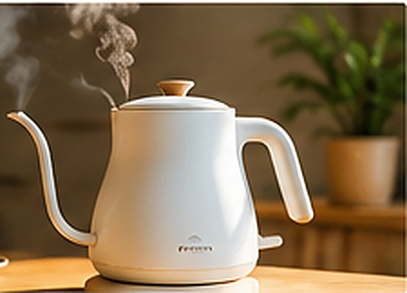
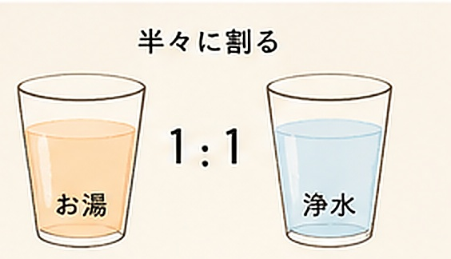
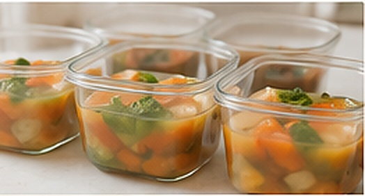
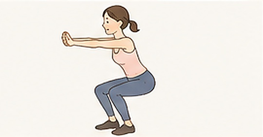
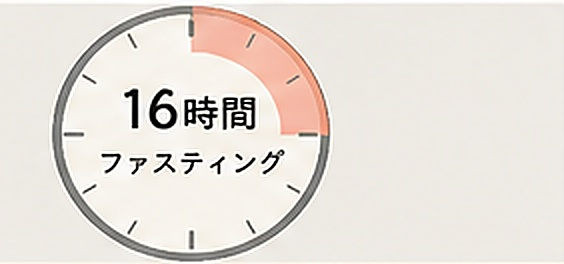
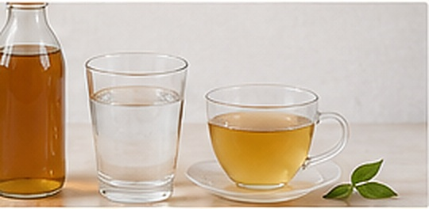
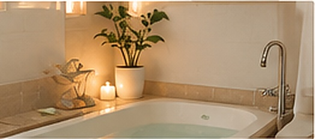

No1
起床後5分以内に
白湯1杯
白湯1杯
なぜ効果的？
内臓を温めて
代謝をスイッチオン。
腸も動き出して
デトックス効果も。
やり方
- コップ1杯（200ml）
- 50〜60℃をゆっくり
- 冷たい水はNG


続けるコツ
沸かしたお湯と浄水を
半々で割ると、
すぐ飲める温度に。
半々で割ると、
すぐ飲める温度に。

内臓を温めて
代謝をスイッチオン。
腸も動き出して
デトックス効果も。


簡単なのに満腹感があり、
体も温まって代謝UP。
ビタミン・ミネラル・
食物繊維も一度に。


朝に体を動かすと
1日中代謝が高い状態に。
冷えやむくみも改善。


内臓を休ませることで
脂肪燃焼モードに。
むくみ解消、
胃腸の調子も整います。


血流が改善され、
冷えやむくみを解消。
睡眠の質も上がり、
成長ホルモンも分泌されます。


睡眠不足は食欲ホルモンを増やし、
満腹ホルモンを減らします。
質の良い睡眠こそ、
痩せ体質の土台。


タンパク質は、
筋肉・肌・髪・爪・
ホルモン・免疫の材料。
ダイエット中こそ
最優先で摂りたい栄養です。
 筋肉が落ちて
筋肉が落ちて 肌・髪・爪が荒れる
肌・髪・爪が荒れる
 甘いものが
甘いものが むくみやすくなる
むくみやすくなる
 気分の落ち込み・
気分の落ち込み・

ここまで読んでくれて
ありがとうございました。
「自分に必要な量が分からない」
「何から始めたらいいか迷う」
という方は、
ぜひ一度
個別相談に申し込んで
診断してもらえたら嬉しいです。
あなたに合った最短ルートを
一緒に見つけましょう。